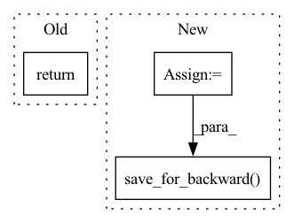

Pattern ID :619

Before Change
tensor * ctx.scale, torch.log(w), regularization
)
ctx.factor = torch.exp(ctx.projection.compute())
return ctx.factor
@staticmethod
def backward(ctx, grad_output):
After Change
w = _arange_like(tensor, reverse=True) + 1
theta = tensor * ctx.scale
s, permutation = torch.sort(theta, descending=True)
inv_permutation = _inv_permutation(permutation)
if ctx.regularization == "l2":
dual_sol = isotonic_l2_cpu(s - w)
ret = (s - dual_sol)[inv_permutation]
ctx.factor = 1.0
else:
dual_sol = isotonic_kl_cpu(s, torch.log(w))
ret = torch.exp((s - dual_sol)[inv_permutation])
ctx.factor = ret
ctx.save_for_backward(s, dual_sol, permutation, inv_permutation)
return ret
@staticmethod
def backward(ctx, grad_output):
In pattern: SUPERPATTERN
Frequency: 3
Non-data size: 3
Instances
Fragment ID: 3001013
Project Name: teddykoker/torchsort
Commit Name: c8ac1de21639cf057aeff4f1aea1639b839276ed
Time: 2021-03-21
Author: teddy.koker@gmail.com
File Name: torchsort/ops.py
M Class Name: SoftRank
N Class Name: SoftRank
M Method Name: forward(4)
N Method Name: forward(4)
M Parent Class: torch.autograd.Function
N Parent Class: torch.autograd.Function
M File Name: torchsort/ops.py
N File Name: torchsort/ops.py
M Start Line: 51
M End Line: 62
N Start Line: 71
N End Line: 87
'>
Before Change
class MaxPool2D(Function):
@staticmethod
def forward(ctx, input, kernel_size=(2, 2)):
return subsample_op(ctx, input, kernel_size, kernel_size,
iter_op="group_res = max(group_res, input[iid])",
result_op="group_res", init_val="FLT_MIN")
After Change
class MaxPool2D(Function):
@staticmethod
def forward(ctx, input, kernel_size=(2, 2)):
idxs = subsample_op(ctx, input, kernel_size, kernel_size,
iter_op="if (input[iid]>maxval) { maxval = input[iid]; maxidx = j * ksz.x + i; }",
result_op="(float)maxidx", decls="float maxval=-FLT_MAX; int maxidx=0")
ctx.save_for_backward(idxs, input.shape)
return subsample_op(ctx, input, kernel_size, kernel_size,
iter_op="maxval = max(maxval, input[iid])",
result_op="maxval", decls="float maxval = -FLT_MAX")
'>
Fragment ID: 3001012
Project Name: geohot/tinygrad
Commit Name: 8827a536e0e650fd231f7bc4416a2f052ac55eb1
Time: 2020-11-11
Author: neph320@gmail.com
File Name: tinygrad/opsgpu.py
M Class Name: MaxPool2D
N Class Name: MaxPool2D
M Method Name: forward(3)
N Method Name: forward(3)
M Parent Class: Function
N Parent Class: Function
M File Name: tinygrad/opsgpu.py
N File Name: tinygrad/opsgpu.py
M Start Line: 381
M End Line: 383
N Start Line: 382
N End Line: 388
'>
Before Change
class LogSoftmax(Function):
@staticmethod
def forward(ctx, input):
return input
@staticmethod
def backward(ctx, grad_output):
After Change
)
prg.logsoftmax(ctx.cl_queue, [input.shape[0]], None, input, np.int32(input.shape[1]), lsum)
output = buffer_like(ctx, input)
prg = clbuild(ctx.cl_ctx,
__kernel void lsmsub(
__global const float *a_g, __global const float *b_g, int sz, __global float *res_g)
{
int gid = get_global_id(0);
int gid2 = get_global_id(1);
res_g[gid*sz + gid2] = a_g[gid*sz + gid2] - b_g[gid];
}
)
prg.lsmsub(ctx.cl_queue, [input.shape[0], input.shape[1]], None, input, lsum, np.int32(input.shape[1]), output)
ctx.save_for_backward(output)
return output
@staticmethod
def backward(ctx, grad_output):
'>
Fragment ID: 3001014
Project Name: geohot/tinygrad
Commit Name: 9332fe19893ccd0b35d08cb0bafd48f2de03b0ac
Time: 2020-11-07
Author: geohot@gmail.com
File Name: tinygrad/opsgpu.py
M Class Name: LogSoftmax
N Class Name: LogSoftmax
M Method Name: forward(2)
N Method Name: forward(2)
M Parent Class: Function
N Parent Class: Function
M File Name: tinygrad/opsgpu.py
N File Name: tinygrad/opsgpu.py
M Start Line: 225
M End Line: 225
N Start Line: 225
N End Line: 255